Выпуск Гусевского стекольного техникума 1970-2020
50-летие со дня окончания Гусевского стекольного техникума (ГСТ) в изложении Бориса Майорова с участием одноклассников. (Второе издание, 2025 год).
Предисловие
Сначала было слово..., потом дела...
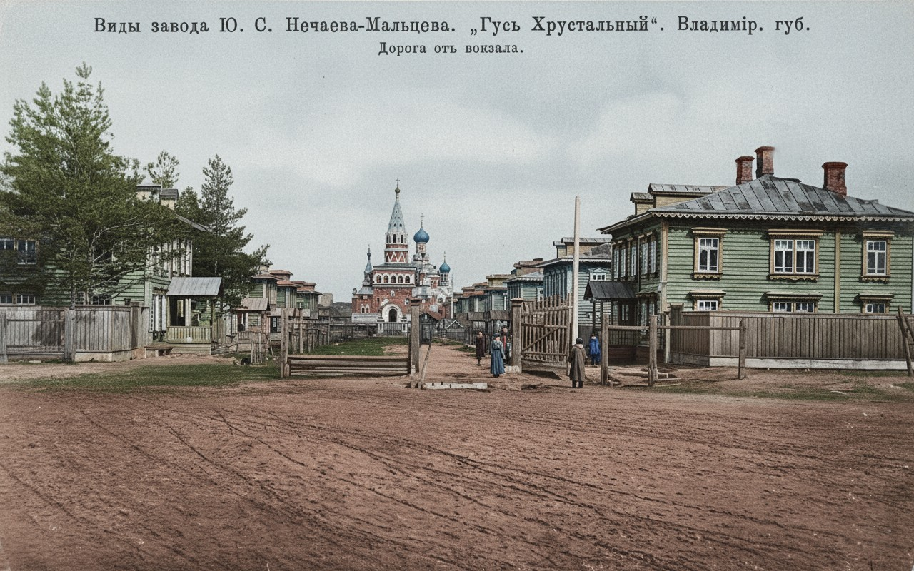
В начале улица называлась Софьинская.
После 1917 года она стала Вокзальной
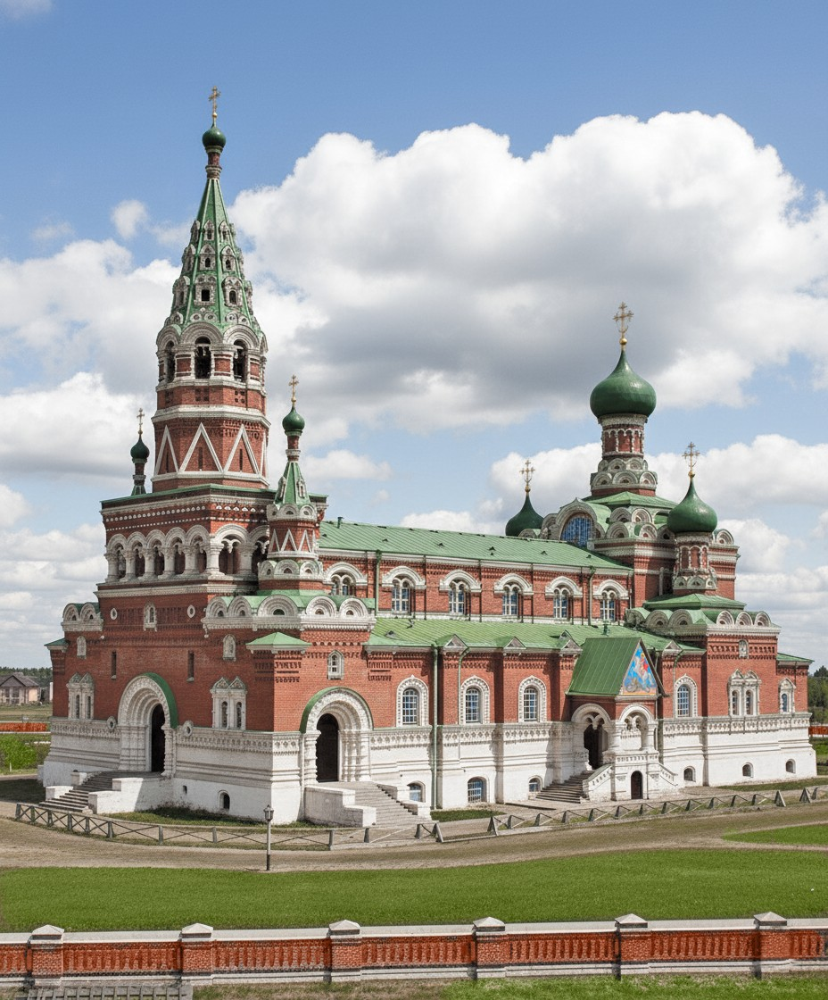
Георгиевский собор после 1917 года стал горкинотеатром без колокольни и куполов
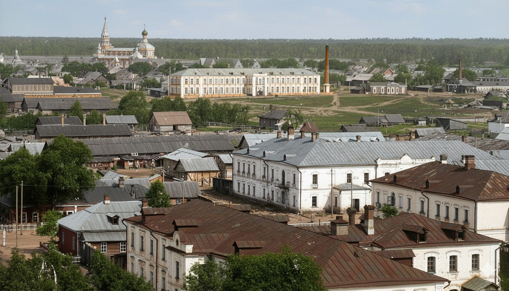
Гусь-Хрустальный, ~ 1903 год, эти фото автор раскрасил с помощью ИИ Gemini, 2025 год
Однако к моменту рождения выпускников в 1950 году в Российской империи и по всему миру было выбито много окон и разбито не мало посуды с целью объединения пролетариев всех стран для свободы, равенства и братства трудящихся в режиме мирового Коммунизма.
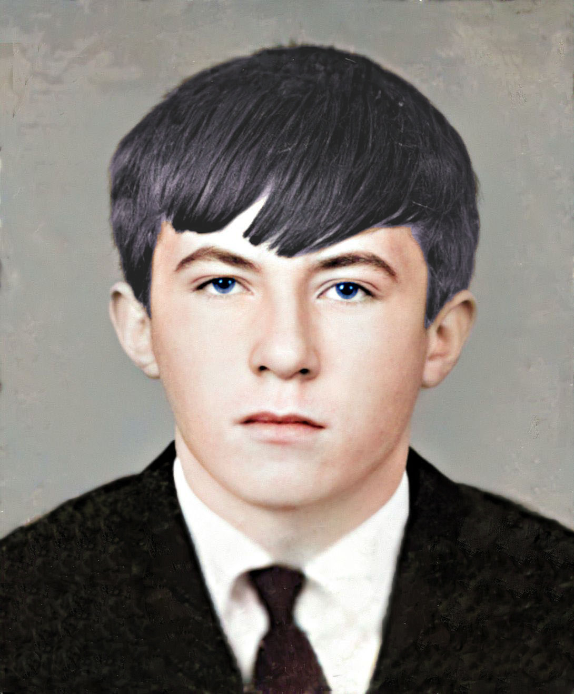
Борис Майоров
1 курс, 1966 год
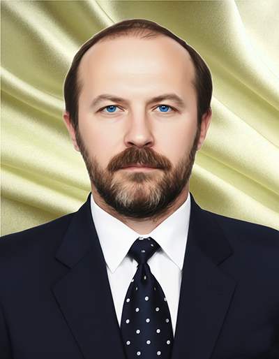
2001 год
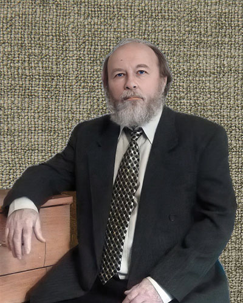
2017 год
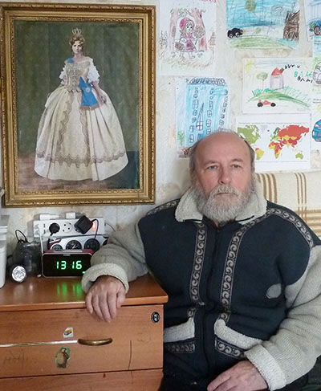
2025 год
|
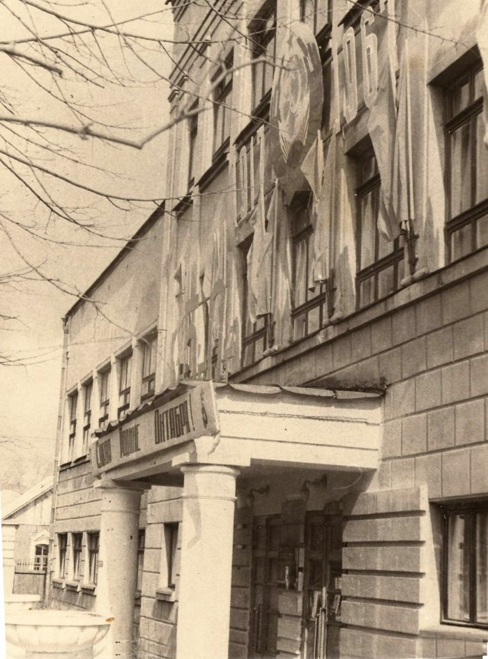 1967 год, год 50-летия Октября. Вход в здание ГСТ, основанного в 1930 году (фото автора). Над входом плакат "Слава Родине Октября!". |
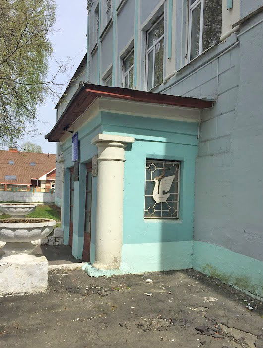
В 90-е техникум отремонтировали, устаревшую символику сняли и вскоре он сгорел.. |
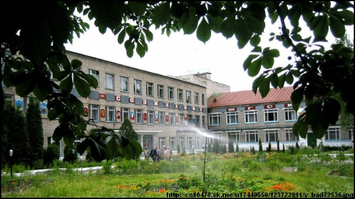
Здание построили заново, а техникум переименовали в колледж.
На современном фото из интернета вход ГСК без колонн, а на здании не призыв к далёкому завтру, а констатация текущей ситуации - "НАШ КУРС - СОЗИДАНИЕ.".
---------
В 1965 году моя мама вдруг решила, что мне надо закончить подготовительные курсы для поступления в техникум..
Со мной на эти курсы ходил Валерий Салеев, отец которого был технологом на Хрустальном заводе и тоже видел его студентом ГСТ. Мы подружились, но по каким-то причинам он не поступил.
|
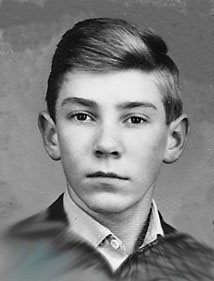 Валерий Салеев, 1965 год |
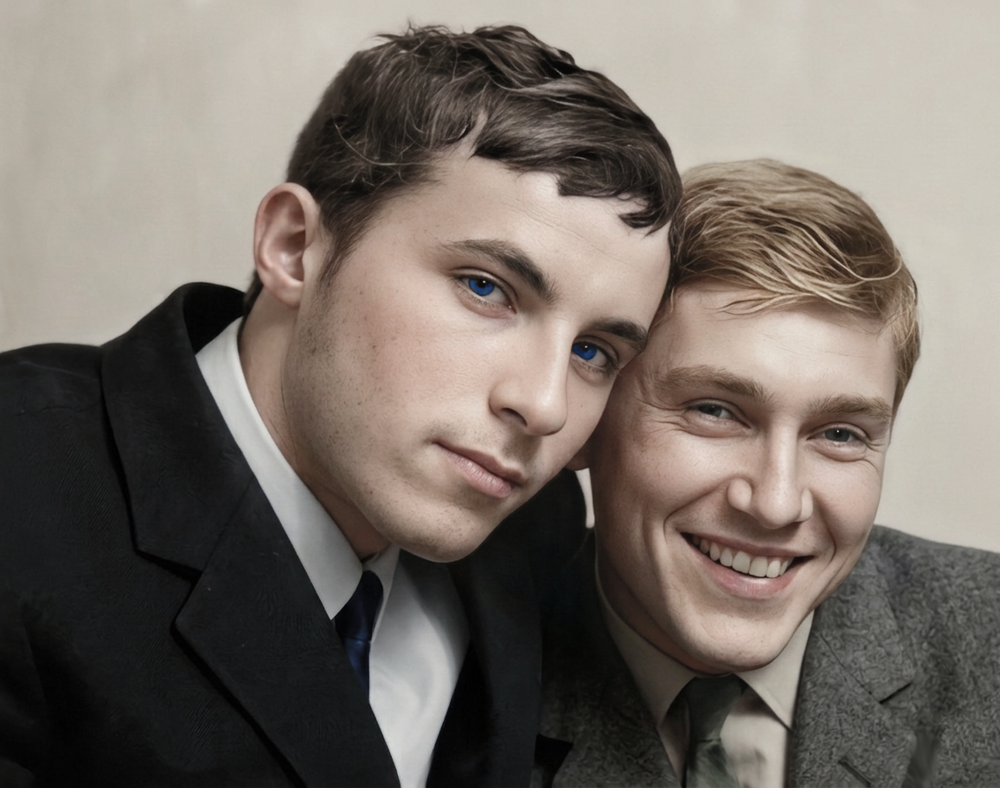 Проводы Валерия в армию. |
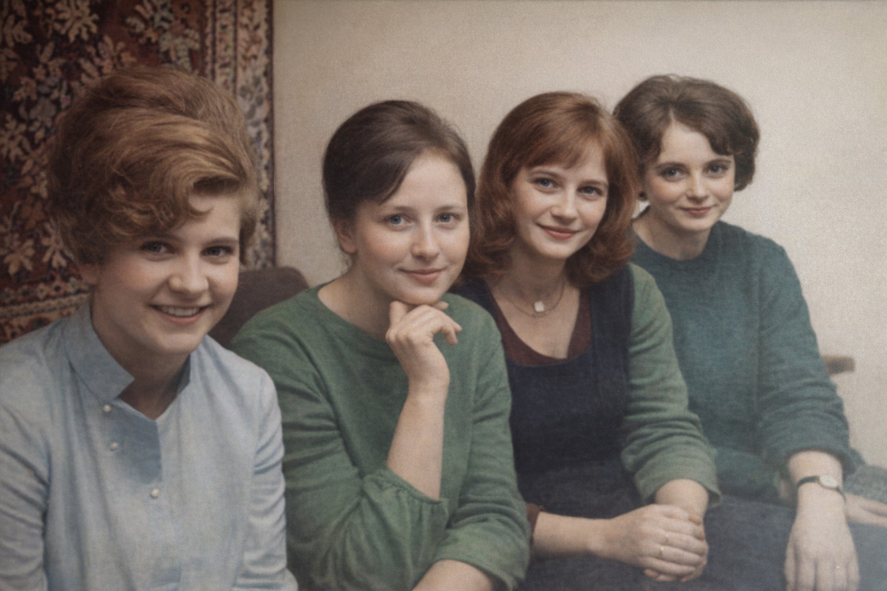 Девчата на проподах, фото воостановлено с помощью ИИ Gemini и Copilot |
8 ноября 1969 года были проводы Валерия в Армию. И уже в марте 1969 года он участвует боевых действиях на острове Даманском .
После срочной службы он поступил на службу в милицию Ярославского
вокзала Москвы, а я в Военную академию. Мы встречались в Москве, но это
уже были далеко не праздные годы: он продолжал свой принципиальный бой с
беспорядками, а я готовился к третьей мировой войне в
военной академии.
Его жизнь потом мне неизвестна, но до милицейской пенсии он не дожил...
ОСНОВНАЯ ЧАСТЬ
В техникум я поступил легко, учился свободно, делал диплом по своему изобретению - автомату транспортировки стаканов в печь отжига после выдувной машины тонких стаканов ВКС-24..
На последнем курсе ходил на подготовительные курсы в институт..., но ушёл в Армию.
|
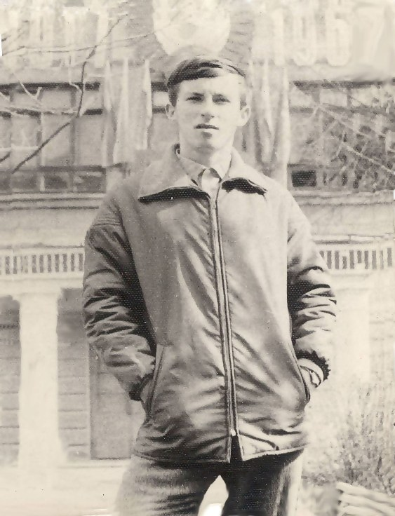
1967 год. Май. Я возле входа в техникум, который был основан в 1930 году. Сгорел после 1990 года и вскоре вновь отстроен. |
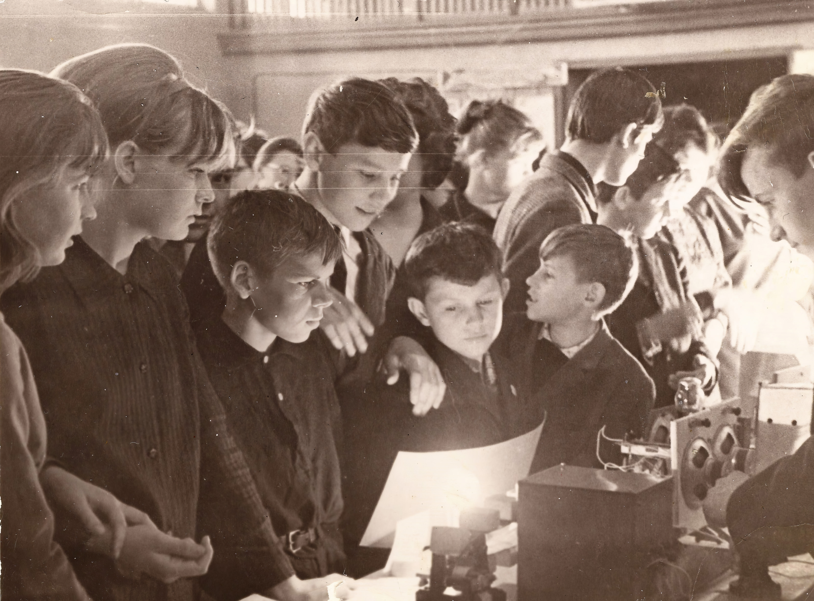
1967 год. День открытых дверей в спортзале техникума. Я демонстрирую конвейер с электрическим фото датчиком-счётчиком изделий из кружка по физике. Наблюдают младшие ребятам с нашей улицы: Александр Самшорин, Рудольф Алексаков и Игорь Буранов. Над ними стоит Владимир Полосин, мой товарищ техникумовских лет и будущий свидетель на моей свадьбе. |
|
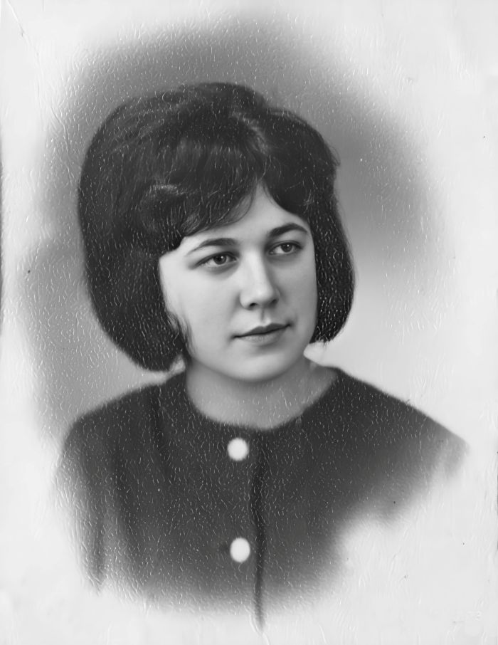 Валентина Туник 1967 год |
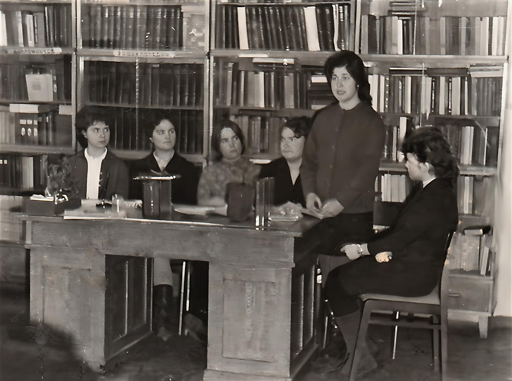
Библиотека техникума, заседание общества "Знание". В президиуме студентки из групп 2Т и 2Т-1, докладывает Валентина Туник, фото неизвестного автора.. Сидят, слева: Л. Клюхина, В. Печникова, ..., Алёна Волкова, Ирина Вуколова. Библиотека и девчата техникума были существенной ценностью. Книгу Василия Панова 300 избранных партий Алёхина с его собственными комментариями мне не хотелось сдавать до окончания техникума, но пришлось. Не простым было и расставание и с Валей Туник, с которой мы учились в школе и в один год поступили в техникум. Все остальные классы и аудитории, преподаватели и мероприятия в техникуме, кроме танцев мне не запомнились. |
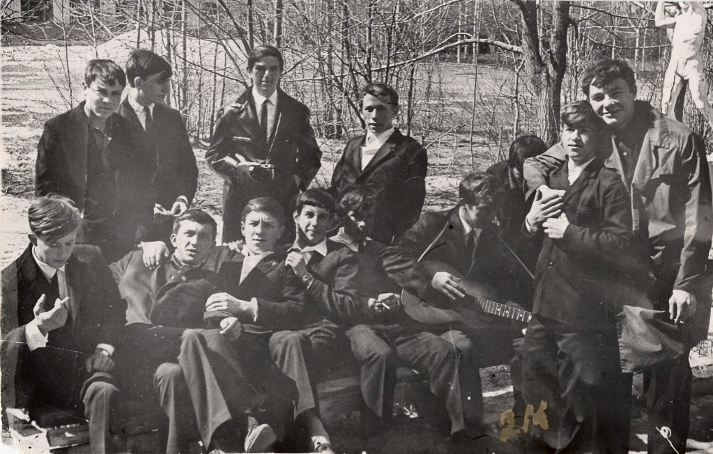
1 Мая 1968 года, наша группа механиков 2М перед участием в демонстрации трудящихся города по случаю 1 Мая.
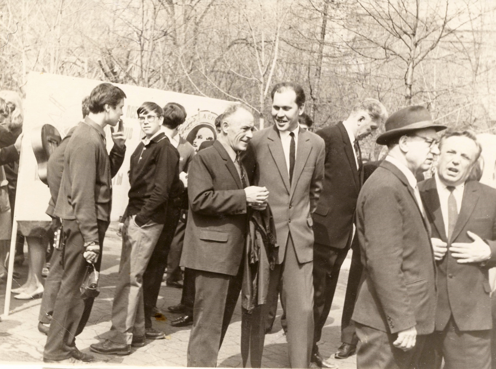
1 Мая 1968 года. Эти демонстрации заимствовали традиции крестных ходов для освящения чего-либо. В этих случаях освещалась власть. Население от своих учреждений или мест сбора проходили до трибун и кричали власти УРА, а после расходились по домам выпить молча свою стопочку, а чаще и больше по этому случаю. Слева: Владимир Полосин, Вячеслав Поросёнков , преподаватель по стекольным машинам и руководитель группы Макаров Аркадий Петрович, преподаватель слесарного дела Станислав Беликов, преподаватель математики Рождественский..., преподаватель электротехники..., преподаватель...
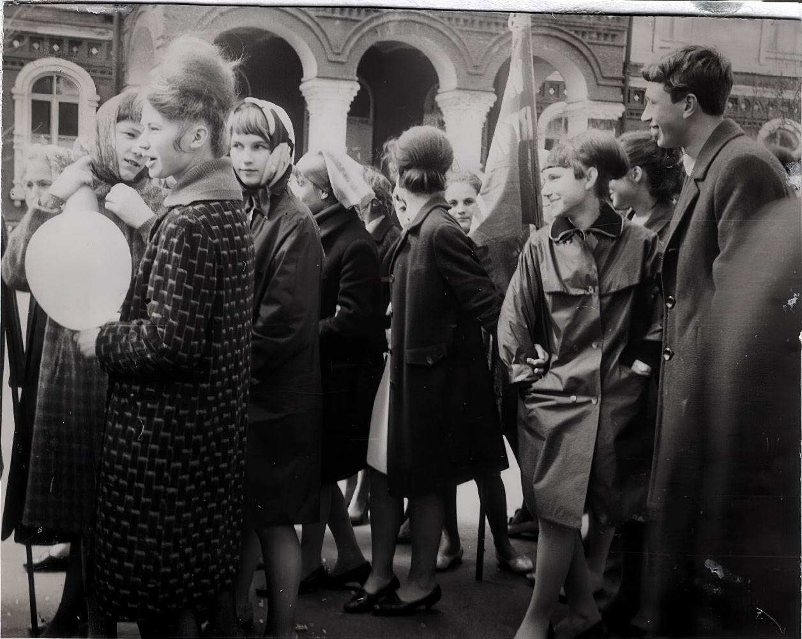
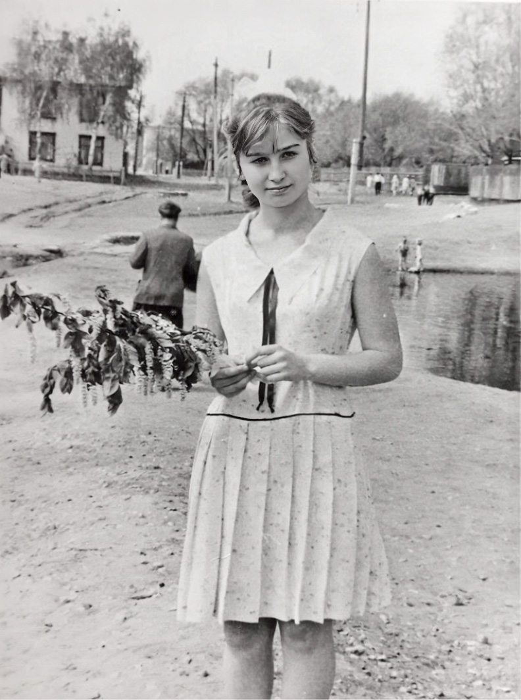
1967 год, Вера Гончарова, 1 курс. В эти лучшие годы учёбы познакомилась с будущем мужем, в семье двое детей. Училась во ВЗИСИ. Работала 30 лет на заводе Особо чистого кварцевого стекла ( ОЧКС ). Последние 2,5 года занимается домашним хозяйством. Катается на велеке...
Нам преподавали:
- - Сурков Владимир Андреевич, директор до 1969 года;
- - Жилиёв С.М. директор после 1969 года;
- - Беляев В.А., заместитель директора по учебно-воспитательной работе;
- - Быкова Нина Петровна, преподаватель черчения, до 1969 года куратор группы механиков;
- - Смолин Григорий Анатольевич, преподаватель черчения;
- - Астанин Александр Сергеевич, оборудование стекольных заводов;
- - Макаров Аркадий Петрович, куратор группы механиков, преподаватель по стекольным машинам.
- - Филимонов Лев Алексеевич, детали машин, сопромат;
- - Филимонова А.П.,
- - Строганова Ю.С.,
- - Леснова М.С.,
- - Кондокова Марианна Николаевна, теплотехника;
- - Гребенникова Лидия Васильевна, математика, экономика промышленности;
- - Сушкевич Елена Фёдоровна, сопротивление материалов, руководитель группы АУ;
- - Рождественская Мария Григорьевна, технология стекла;
- - Рождественский..., преподаватель математики;
- - Харкевич Александр Яковлевич, материаловедение, технология металлов;
- - Зотова Людмила Ивановна, преподаватель коллоидной и физхимии;
- - Старцев Владимир Лукич, немецкий язык, куратор группы технологов;
- - Фролова Маргарита Георгиевна, минералогия, силикатные минералы;
- - Булычёва Дина Герасимовна, учитель физики;
- - Антипова Александра Михайловна, учитель истории;
- - Беликов Станислав Сергеевич, заведующий мастерскими, слесарное дело.
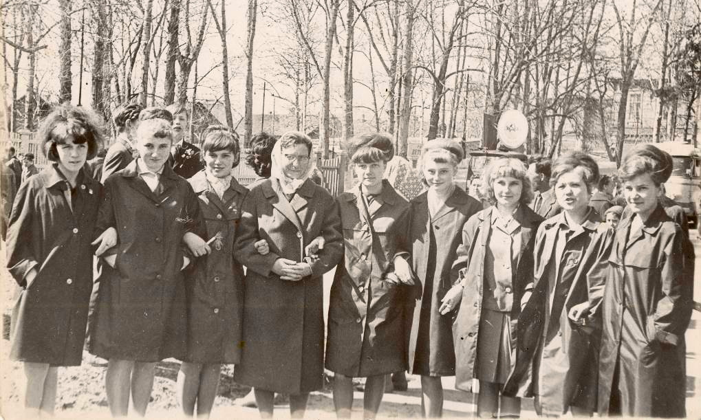
1 Мая 1968 года, перекрёсток улиц Калинина и Гоголя (До 1923 года улицы назывались Стефанофская и Софьинская, рядом стоял с куполами Георгиевский собор, после сноса куполов собор преобразовали в эти годы в дворец Труда имени Троцкого, а в наши годы учёбы там завершал работу городской кинотеатр с буфетом и пивом в огромных грязных бочках местного пивзавода).
На фото выпускной класс, где я учился до поступления в техникум. На перекрёстке колонны демонстрантов от школ и других организаций согласно очереди выходили к центральной площади города - площади Свободы и проходили перед трибуной партийных и советских начальников. Ведущий праздника с трибуны через громкоговоритель обычно провозглашал: "Правильной дорогой идёте, товарищи! Ура!!!". Колонна протяжно отвечала: "Ура...
Выпускницы 10 класса: Валентина Рыбина, Наталья Быкова, Ирина Воронина, преподаватель русского и литературы Антонина Николаевна Кайнова, Людмила Герасимова, Лидия Максюкова, Галина Котова, Ирина Тимофеева, Марина Завало..
Половина этих девочек не дожили до пенсии из-за здоровья и жизненных невзгод. Рухнула и кровля нашей школы. Второй год для её ремонта нет средств..
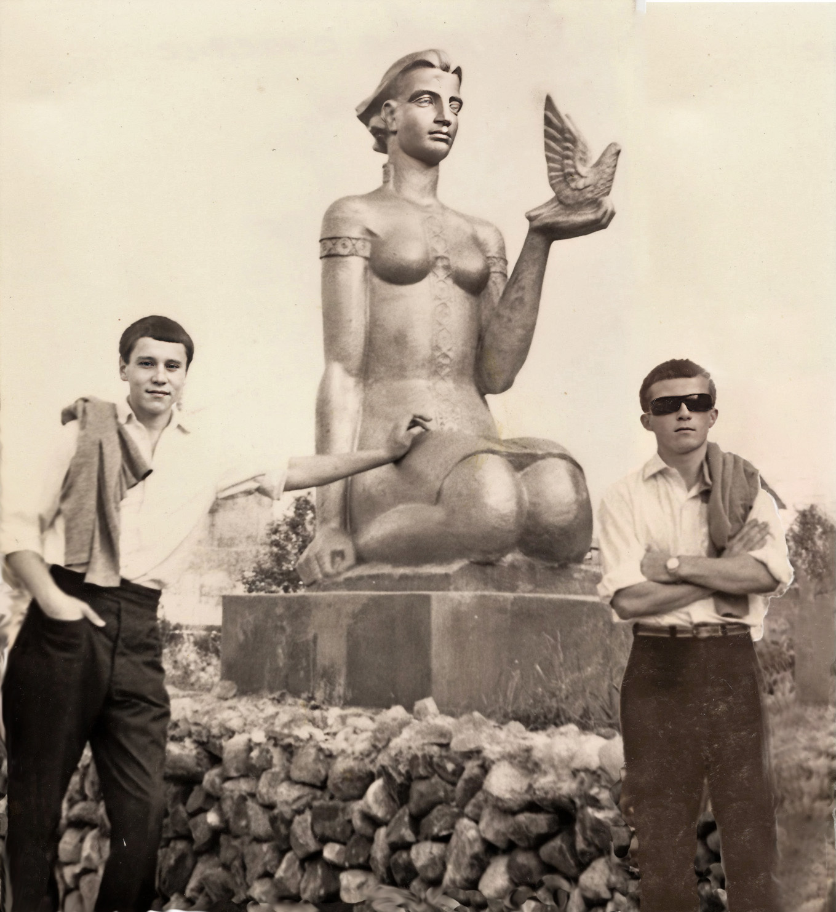
Лето 1968 года. Коллаж. Обоюдное фото возле скульптуры девицы у кинотеатра Алмаз. Под попой девицы комсомольцы города в 1967 году замуровали капсулу с посланием в коммунистическое завтра, комсомольцам 2017 года..
Капсулу вскрыли и прочитали, что комсомольцы желают всем всего хорошего. Однако ни комсомольцев, ни коммунизма на дворе уже не было. Новую капсулу опять замуровали на 50 лет потомки многочисленных комсомольцев с таким же, на мой взгляд, пустым пожеланием всего хорошего. Переосмысление прошлого в Гусь-Хрустальном на сегодняшний год не произошло..
Владимир Полосин слева, я на коллаже справа со скрещенными руками: ни к попе девицы, ни к посланию комсомольцев я не имел никакого отношения. Я не был комсомольцем..
Мы учились вместе с первого класса до выпуска из техникума. Читали одни книги, увлекались шахматами, фото, музыкой... Вместе подрабатывали на фабрике и гуляли с девочками. После окончания техникума ушли в армию и пошли по своим дорогам..., не переставая встречаться по сей день..
Из нашего класса ему больше всего нравилась Ирина Воронина, а мне Марина Завало, но женились мы после угара первой любви на других: Владимир Полосин нашёл свою настоящую любовь в Зеленоградском институте электронной техники. Я после срочной службы предложил руку и сердце девушке из Гусь-Хрустального.
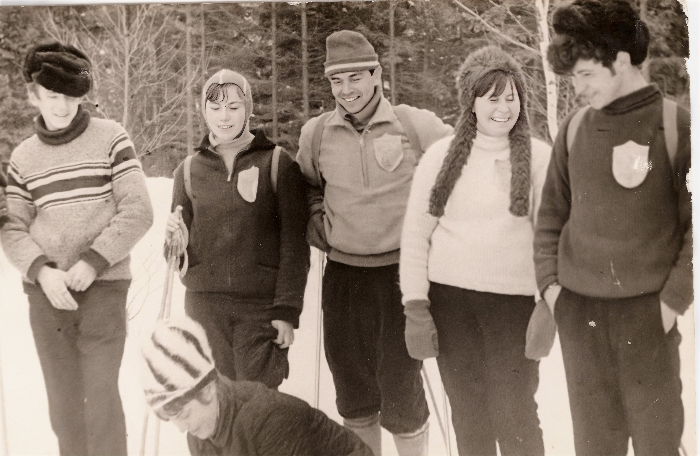
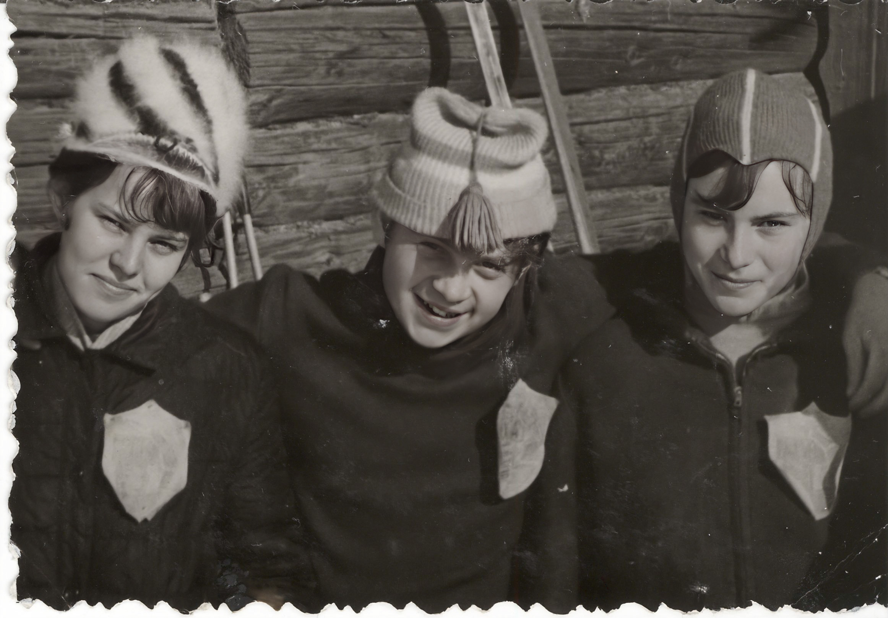
Зима 1968 года. Лыжный поход с преподавателем физкультуры по местам трудовой славы стекольщиков через деревню Тименка в посёлок Анопино, Красное Эхо и назад. Комсорг нашей группы Александр Жуков со студентками из группы технологов Валентиной Егоровой и Татьяной Балашовой (справа). Я на это мероприятие опоздал.
Во время учёбы я и мой товарищ Юрий Коробов случайно не были комсомольцами. Однако это сказалось позже на наших жизненных историях. Его не выпускали за границу работать на стройках, а я, критически относившийся к окружающим, не вписался в существующий режим однопартийной системы большевиков.
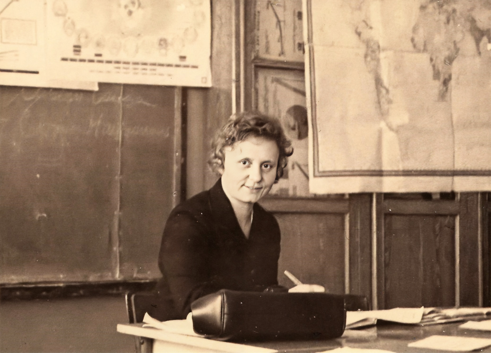
Нина Георгиевна Коронёвкина (1931-1997), учитель классовой и партийной истории советской России, секретарь партийной организации техникума. Преподавала складно, но без примеров на городе, согласно установкам партии и учебной программы подготовки кадров среднего звена малых стекольных предприятий. Эта жёсткость, граничащая с рабством советского учительства, обязывала её освящать только те знания-факты, которые должны иметь специалисты у конвейров или начальники смен на стекольных заводах по выпуску стаканов и бутылок для трудящихся, самоотверженно строящих коммунизм ...
Историю своего родного города я не знал после окончания техникума. Мне не было известно, что в ходе атеистического воспитания и коммунизации в 1923 году были снесены все купола с храмов, в 1926 году началась коллективизация и индустриализация, строительство стекольного завода имени Дзержинского, нашего техникума, второго этажа на богадельне, куда потом въехала местная власть. Были переименованы почти все центральные улицы города, а несогласных с этими мерами советской власти во Владимирской области оказалось 10 822 человек: из них 1816 человек расстреляли, а остальных отправили в трудовые лагеря на перевоспитание. Искалечены советской властью и 3 тысячи кулаков, высланных вместе с семьями в Сибирь в 1929–1931годах ...
Позже ко мне пришло понимание разницы подготовленного узкого специалиста от образованного.
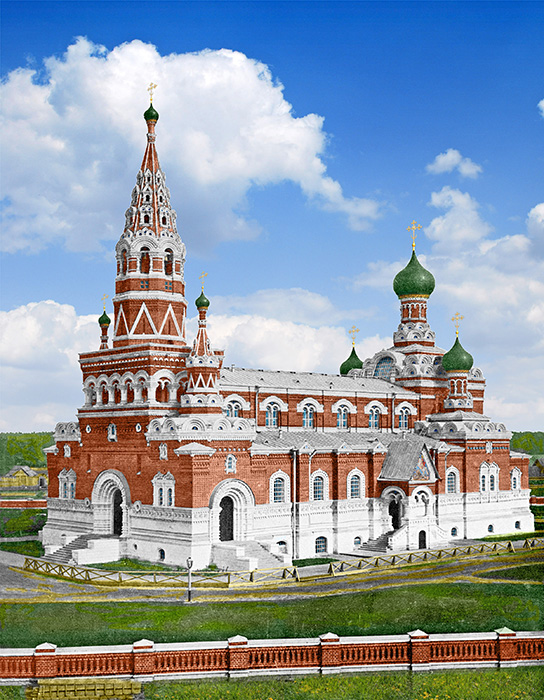
Георгиевский собор, Гусь-Хрустальный, ~1903 год, фото неизвестного автора раскрасил во время карантина в апреле 2020 года.
Л.Н. Бенуа: «... в этот храм я вложил все, что мог, и, может быть, он останется лучшим из моих творений».
В Георгиевском соборе соединены лучшие традиции западноевропейской и русской архитектуры. Он мог служить образцом для всего региона и самое главное очагом народной культуры и укоренения христианской нравственности.
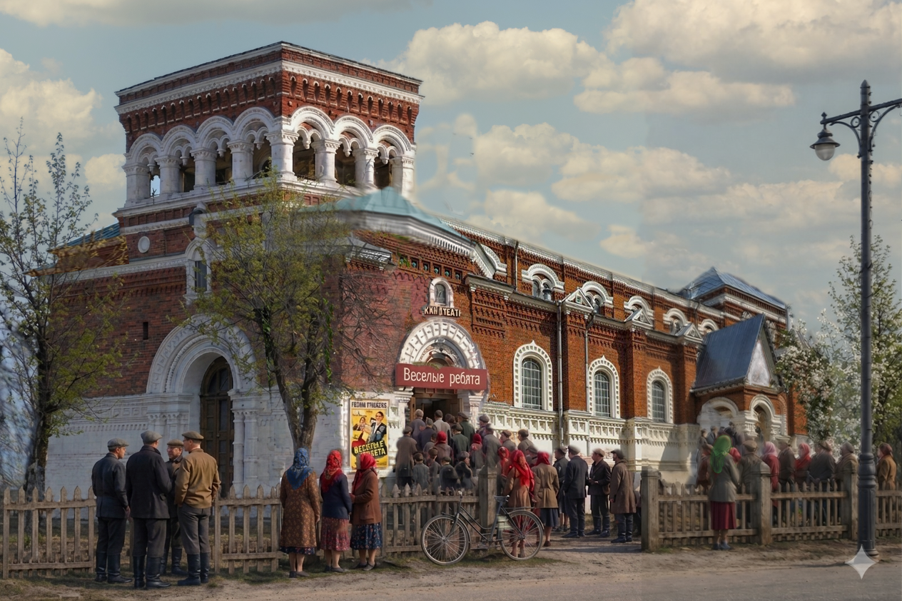
Естественной культуры народа .
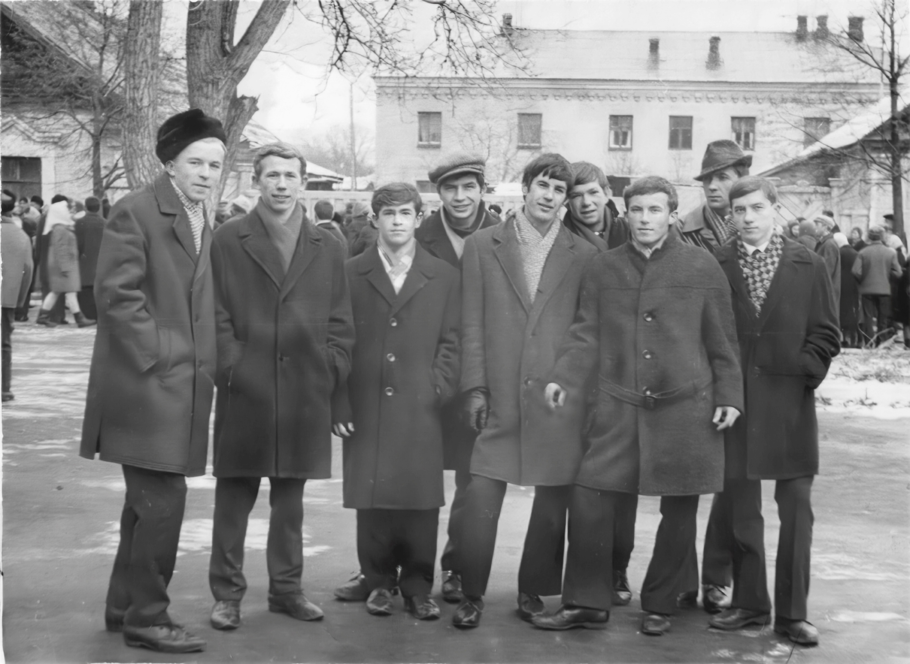
7 Ноября 1968 года, участники праздничной демонстрации - студенты техникума из группы 3М: Евгений Мальков, Виктор Лобков, Евгений Котов, Павел Шишкин, Валентин Розанов, Вячеслав Поросёнков, Борис Майоров, Леонид Коршунов, ..., любительское фото Владимира Полосина с моего фотоаппарата Зоркий-4, 1967 года выпуска ...
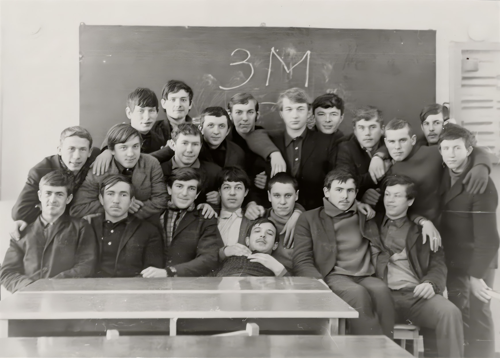
Студенты техникума, механики, группа 3М, 1969 год, фото автора ...
Первый ряд: Евгений Котов, Юрий..., Владимир Харламов, Евгений..., полулежит ???, Владимир Полосин, Владимир Поликарпов, Евгений Воронцов; второй ряд: Виктор Лобков, Виктор? ..., Борис Иванович Раевский , Виктор...,Владимир Беспалов, Леонид Коршунов , Михаил Гуцков , Сергей..., Евгений Фрейдорф, Василий Ерохин, Владимир Ломтев , Валентин Розанов, Александр Роздин ...
На снимке нет меня, Павла Шишкина, Василия Малькова,Александра Жукова, Юрия Коробова, Николая Гришина, Николая Трубилова, Владимира Гуськова, Юрия Морковкина и Вячеслава Поросёнкова ... Надеюсь, никого не забыл ...
Комсомольский актив техникума в 1968 году
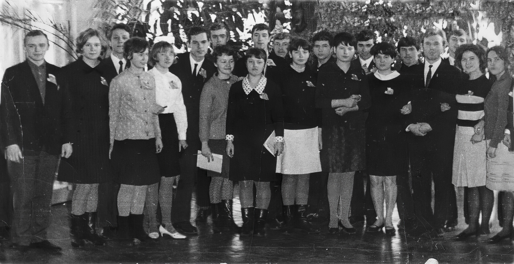
Все на демострацию... своей лояльности партии и правительству.
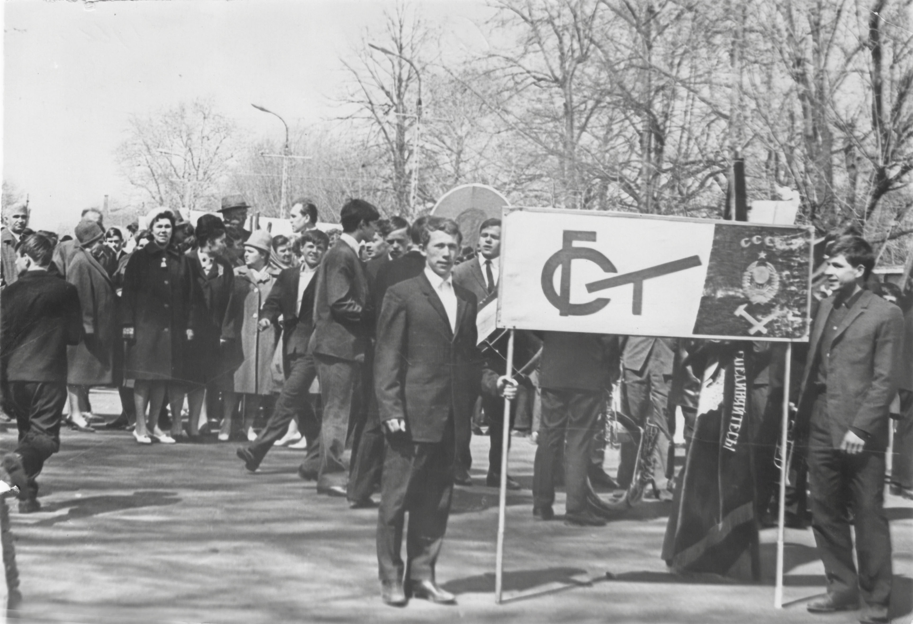
Май 1968 или 1969 года. Фото автора. Во главе колонны наши люди: Виктор Лобков и Павел Шишкин. Слева директор техникума..., за шапкой преподавателя куратор группы механиков Макаров Александр Петрович?, учитель математики Пчелякова Антонина Иосифовна, учитель ... Зотова Л.И., ..., в шляпе Рождественский...., в шляпке учитель физики Дина Герасимовна ..., рядом учитель русского и литературы ..., голова учителя слесарного дела Беликова Станислава далее оркестр..
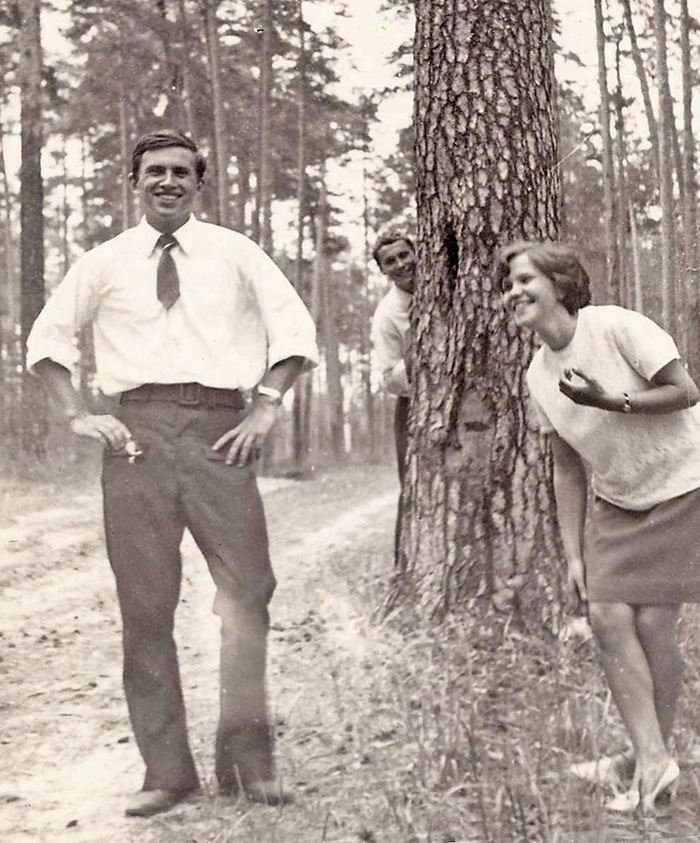
1969 год. Юрий Коробов, рядом Лидия Табуева, за сосной Владимир Полосин. Я и Людмила Осипова фотографируем сцену. Возможно был другой состав команды в эти дни прощания с юностью...
Юрий Коробов по распределению уехал на стекольный завод под Красноярск, там нашёл свою супругу и вернулся в Гусь; в семье два сына и внуки...
Работал своими руками, как и я он не был комсомольцем в техникуме. Завершил карьеру мастером-сантехником в кооперативе. В настоящее время живёт до холодов на даче в деревне под Гусём и обеспечивает семью картошкой и огурцами. Лидия Табуева училась во Владимире в институте, создала крепкую семью и завершила карьеру мэром подмосковного городка. Людмила Осипова живёт с мужем в Гусе и воспитывает внуков...
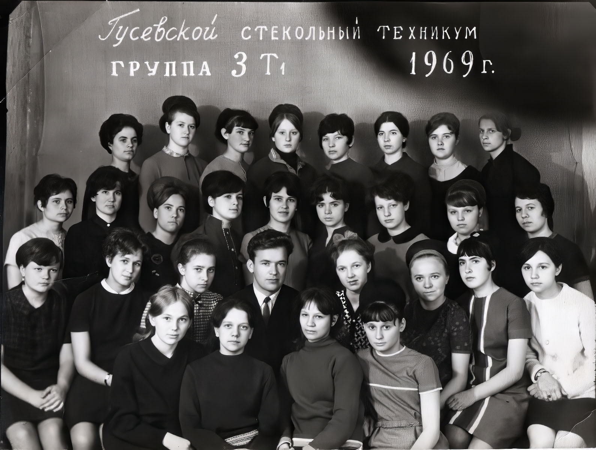
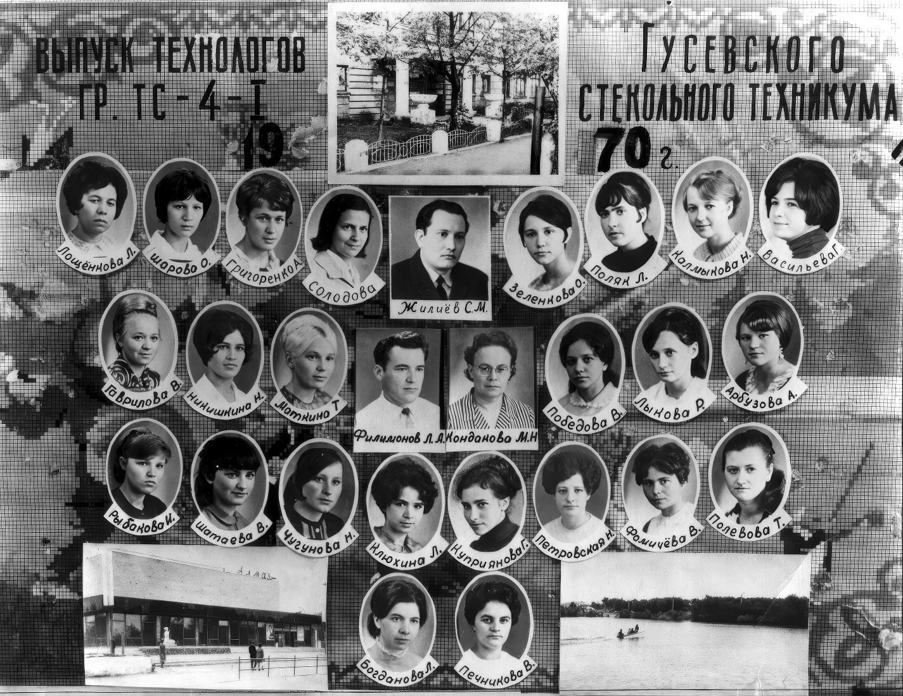
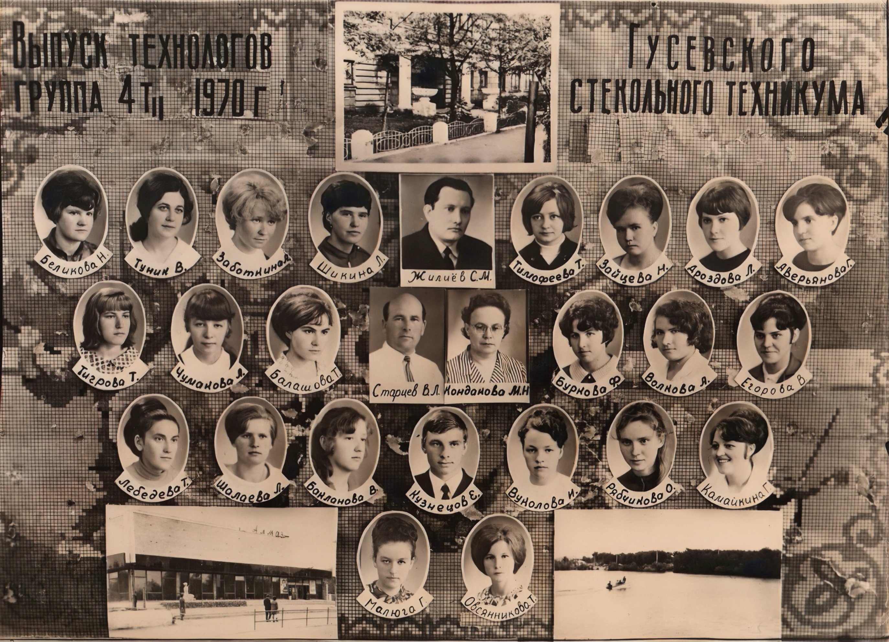
1970 год, Выпускная фото группы технологов 4Т-2...
Единственный юноша из этой группы Евгений Кузнецов по совету преподавателя физкультуры сразу после выпуска поступил в институт физкультуры и спорта, отслужил офицером 2 года в Армии, а после службы уехал вместе с женой и сыном в город Саров поддерживать физическую культуру среди местных физиков. Евгений до сих пор продолжает трудиться...
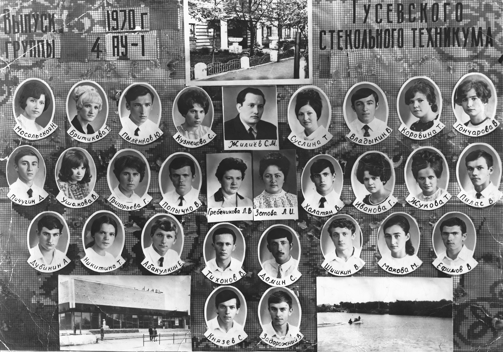
1970 год, Выпускная фото группы автоматических устройств...
Комсорг не смог организовать нашу группу даже на общее фото. Под стать ему был и куратор группы, который однажды лишил меня стипендии на месяц за игру в домино в обеденный перерыв с рабочими составного цеха на производственной практике.
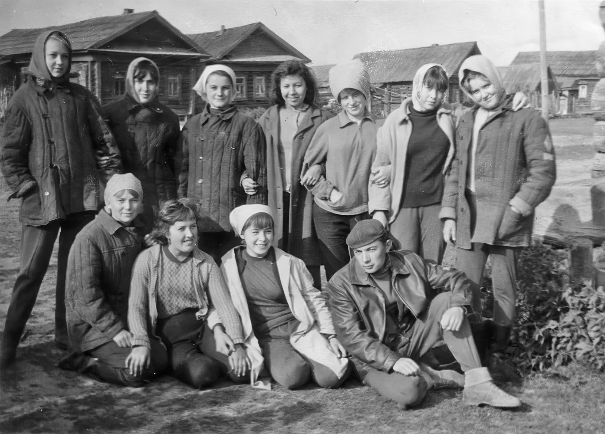
Во время учёбы в сентябре первые три года нас отправляли на картошку:
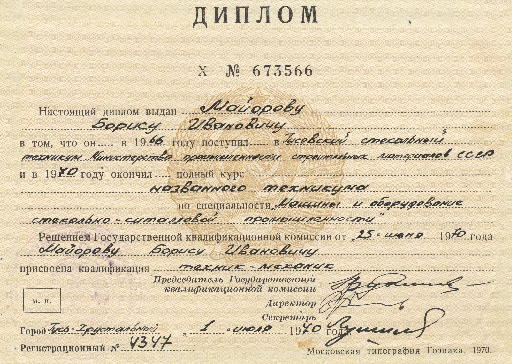
Диплом выпускника 1970 года...
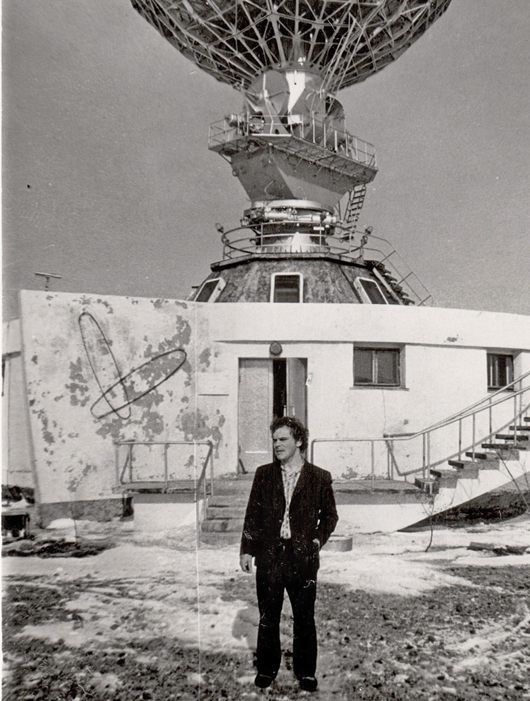
Владимир Ломтев , провёл лучшие годы, работая на космической станции связи Орбита на острове Кунашир, куда уехал вместе со второй женой...
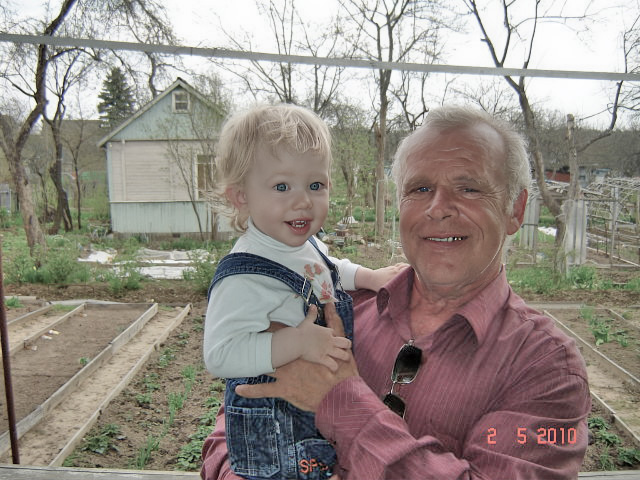
Фото из Одноклассников. С внучкой на даче в Калуге...
Умер в 2019 году. Похоронен в Гусь-Хрустальном. В последнее время часто вспоминал пончики с повидлом за 5 копеек, которые пекли в буфете техникума. Он рос в многодетной семье без отца в двухкомнатной квартире с удобствами и с соседями . Техникумовские пирожки в скудные 60-е годы (годы освоения космоса и недр) для него много значили, так как дома вдоволь не было хлеба...
|
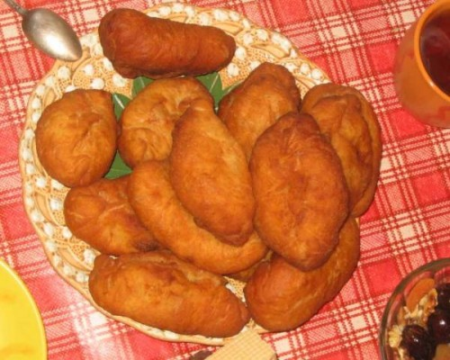 Пирожки с повидлом по 5 копеек |
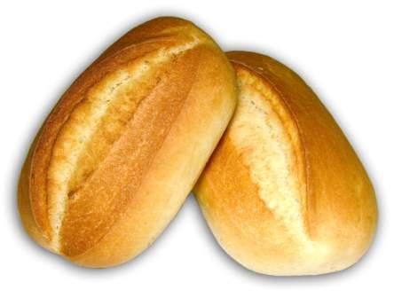 Булочки по 7 копеек |
В 60-е годы учёбы в техникуме улица Сенная выглядела прилично и жили там интересные девочки в благополучных семьях, с которыми Володя Ломтев познакомил нашу компанию: Коробова, Полосина и меня...
Наталья Рашина, Людмила Осипова, Нина Ясникова и другие, которые закончили университеты, но прожили свои молодые годы в очередях советского времени.
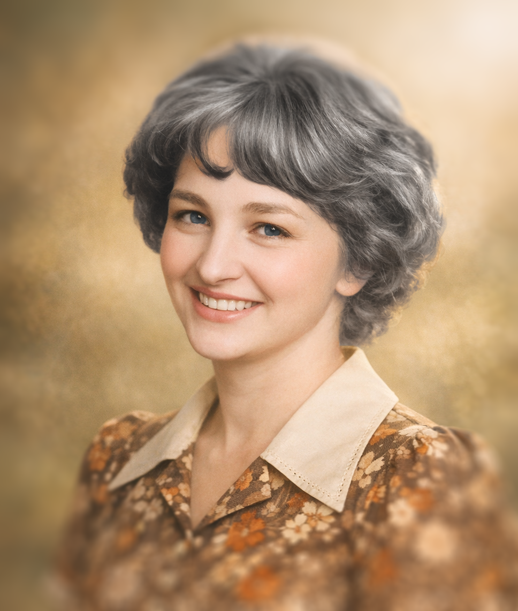 |
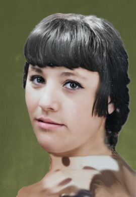 |
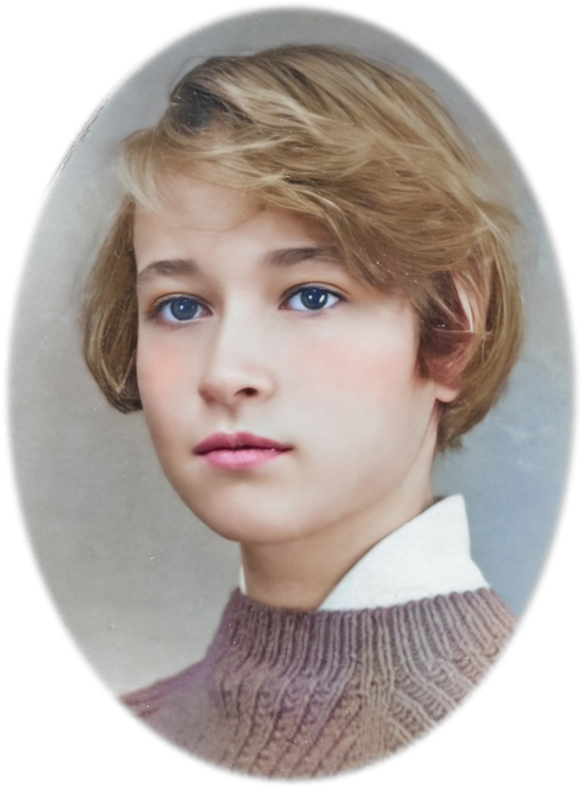 |
Вскоре правящая партия не помогла с оплатой 2-х комнат сёстрам Ломтева и семью выселили в более скромное жильё, а улицу Сенную, на излёте своей сомнительной деятельности, администрация переименовала на фамилию местного большевика, сносившего купола городских храмов...
Наша семья не голодала в 60-е годы, но странная нищета и язвы общества на фоне полётов в космос были заметны...
Так как часть времени я проводил с девочками и юношами вне техникума, то я не знаю как жили студенты в общежитии, но полагаю, что трудно и тоже запомнили пирожки за 5 копеек, городскую булочку за семь копеек и чай за 3 копейки. Многие студенты на 15 копеек могли обедать и ужинать на стипендию в 20 рублей. По воспоминаю Валентины Туник в их учебной группе один из студентов приносил пончики в конце пары, перед большой переменой, на подносе. И уже никто не слушал преподавателя, а все смотрели на эти пончики, вдыхая их аромат, и с нетерпением ждали звонка.
|
Бесплатно соль и горчица на столах в общепите. 1 коп. коробок спичек стакан газированной воды без сиропа кусочек хлеба в столовой 2 коп .разговор по телефону-автомату ежемесячные комсомольские членские взносы 3 коп. стакан газированной воды с сиропом стакан чая в кафе; пулька в тире 4 коп. проезд в троллейбусе электроэнергия за 1 кВт/час, презервативы (2 шт.) 5 коп. проезд в метро, в автобусе пирожок с повидлом; зубной порошок "Мятный" 6 коп. большая кружка кваса из бочки , витамин С 7 коп. фруктовое мороженое в бумажной стаканчике стрижка "под ноль" , городская булочка 8 коп. коржик молочный 9 коп. булка калорийная , мороженое "Молочное" 10 коп. бутерброд с варёной колбасой в кафе билет в кино на детский сеанс 1 кг. картошки , плитка гематогена 11 коп. беляш с мясом в кафе и столовой , мороженое "Эскимо" 12 коп. мыло детское , пустая бутылка (0,5 л.) полстакана сметаны в столовой 13 коп. яйцо куриное , батон белого хлеба 14 коп. сигареты "Прима" , ржаной хлеб 15 коп. мороженое "Сливочное" сыр плавленый "Дружба", 62 г. , пустая бутылка из под кефира 16 коп. мука 1 кг. , треугольный пакет молока 0,5 л. 17 коп. батарейка 4,6В, 0,5А-ч ("квадратная") 18 коп. батон белого хлеба "Подмосковный" 19 коп. мороженое пломбир в стаканчике 20 коп. 1 литр молока из бочки пустая бутылка из под шампанского 22 коп. мороженое "Ленинградское" пирожное "Корзиночка", "Песочное", "Картошка" кружка пива , папиросы "Беломорканал" 23 коп. сыр плавленый "Дружба", 100 г. 25 коп. батон белого хлеба ("нарезной") стакан сметаны в столовой 20 коп. билет в кино на дневной сеанс 26 коп. пачка маргарина, перловка, 1 кг. 28 коп. мороженое "Лакомка" , пол литровая бутылка молока 30 коп. билет денежно-вещевой лотереи пачка сигарет "Ява" в мягкой упаковке 33 коп. килька в томатном соусе 35 коп. кружка пива 0,5 л. , фотоплёнка (36 снимков, ч/б) 40 коп. пачка сигарет "Космос"; рис, 1кг. 45 коп. майонез в стеклянной майонезной банке "Провансаль" 46 коп. гречка, 1 кг. 48 коп. мороженое "Пломбир" 55 коп. банка сгущенки , обед в студенческой столовой 90 коп. яйцо куриное, 10 шт. (1-ой категории) линейка логарифмическая (малая, длина шкалы 12,5 см.) 1 руб. 02 коп. вино "Каберне" 1 руб. 04 коп. сахар рафинад в пачке, 1 кг. 2 руб. 20 коп. колбаса вареная "Столовая", 1 кг. 2 руб. 30 коп. колбаса вареная "Докторская",
|
1 кг. 2 руб. 50 коп. упаковка безопасных лезвий "Балтика" 2 руб. 87 коп. водка "Московская" (зеленая этикетка) 3 руб. мясо говядина, 1 кг. 3 руб. 38 коп. ручка перьевая в подарочной коробке 3 руб. 40 коп. сливочное масло 3 руб. 44 коп. лента магнитная (катушка) тип А 3601-6 Б 3 руб. 50 коп. сливочное масло, 1 кг. 3 руб. 60 коп. "Советское" шампанское 3 руб. 62 коп. водка "Пшеничная" 4 руб. 12 коп. коньяк "Три звездочки"; водка "Экстра" 5 руб. коньяк КВ 5 руб. 25 коп. плата за комнату в коммуналке 12 руб. зарплата сержанта в ВС СССР 15 руб. фотоаппарат "Свема 8М" 35 руб. небольшое золотое колечко 39 руб. велосипед "Орленок" 52 руб. велосипед "Урал" 55 руб. "Ленинская" стипендия в институте 56 руб. авиабилет "Москва-Новосибирск" 65-130 руб. зарплата молодого специалиста 150 руб. средняя зарплата инженера со стажем до 3-х лет 175 руб. средняя зарплата старшего инженера 190 руб. средняя зарплата ведущего инженера 200 руб. средняя зарплата в 198x годах 250 руб. денежное довольствие лейтенанта в ВС 250-300 руб. размер пенсии у сотрудников МВД и военнослужащих 300 руб. денежное довольствие подполковника в ВС 390 руб. холодильник "Минск-16" 430 руб. телевизор цветной "Юность" 450 руб. зарплата первого секретаря обкома партии 600 руб. денежное довольствие полковника в ВС зарплата инженера на закрытом военном предприятии зарплата министра одной из союзных республик 740 руб. мотоцикл "Иж-Юпитер-3" 800 руб. зарплата министра СССР 1400 руб. мотоцикл "Урал-3" 3000-3500 руб. 1-комнатная кооперативная квартира 3500 руб. машина ЗАЗ-968 4987 руб. машина Москвич-412 (1976 г.) 5000 руб. 3-комнатная кооперативная квартира 5500 руб. машина ВАЗ-2101 ("копейка") 9200 руб. машина ГАЗ-24 "Волга" |
Студентам, жившим в общежитии, родители помогали домашней картошкой..
Я жил дома, занимался фото, чтением книг, танцами....
Россия долго выходила из гражданской войны и нищеты, но эти темы в техникуме не обсуждались. Свободная общественно - политическая жизнь была полностью заморожена...
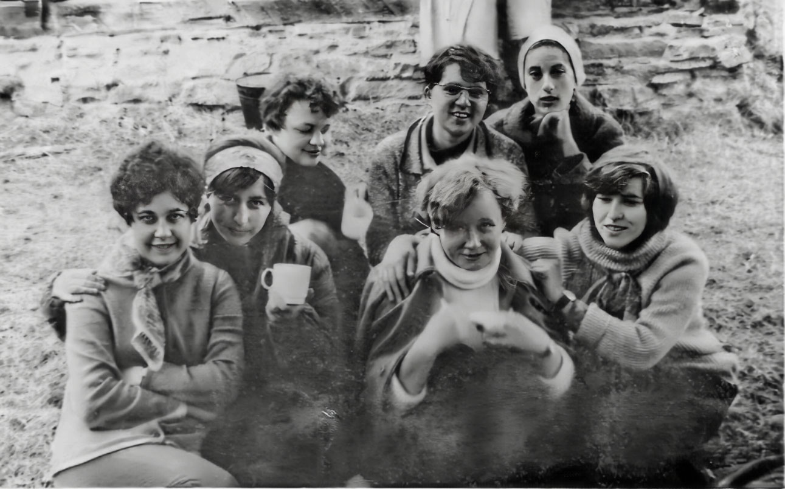
1970 год, Карпаты. Семеро выпускников группы 4Т2. Согласно заблуждению большевиков по поводу дружбы народов они были направлены в Украину поддерживать местную стекольную промышленность.
Валентина Туник, Надежда Широкова, Алёна Заботкина, Татьяна Тигрова, Ирина Вуколова, Галина Аверьянова и Татьяна Лебедева прибыли по направлению на Щирецкий завод Стеклоприбор недалеко от Львова. Первые годы вместе работали и отдыхали, устраивали свои карьеры и семьи.
|
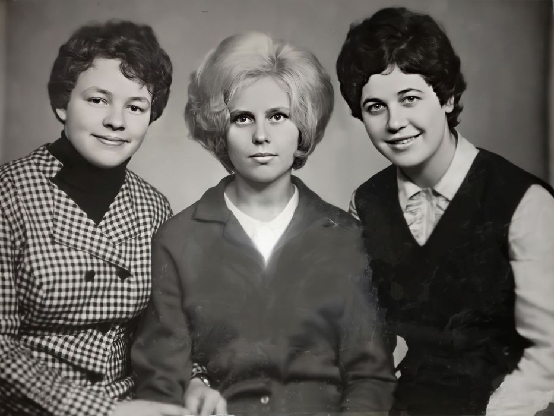 Осень 1971 года. Ирина Вуколова и Валентина Туник с местной девушкой отметили поступление во Львовский Политех новыми причёсками и совместным фото... И, конечно, правящая партия не могла пройти мимо девчат из нашего техникума. Однако впереди была большая и интересная жизнь. |
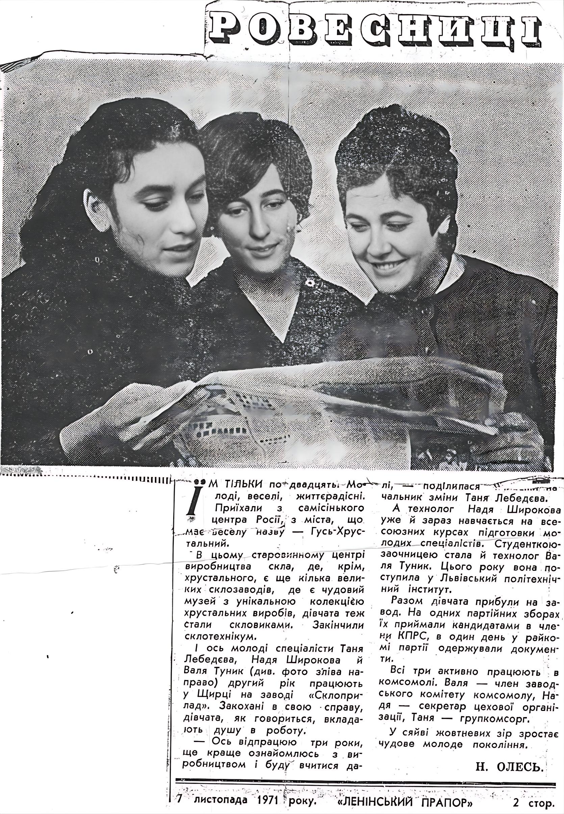 |
- Ирина Вуколова полтора года работала технологом, вернулась к родителям в Гусь-Хрустальный, поступила в ВЗИСИ, вышла замуж, работала на Хрустальном заводе на руководящих должностях среднего звена до пенсии. Воспитала двух сыновей, теперь воспитывает внуков, активна в интернете, работает и отдыхает на даче, до сих пор полна оптимизма и бодрости...
- Галина Аверьянова работала начальником ОТК, вышла замуж, вырастила двух дочерей. После распада СССР закрылись предприятия, осталась без работы и в середине 90-х годов уехала в Италию на заработки, дала хорошее образование своим детям. Живёт и работает до сих пор в Риме, заработала там и пенсию. Купила небольшой домик под Римом, приезжает туда на выходные отдыхать от суеты Вечного города. В последнее время почти ежегодно приезжает в Щирец к мужу и дочери (старшая дочь живёт под Парижем)...
- Татьяна Лебедева работала начальником смены 2 года и уехала. Жила и работала в г. Бор Горьковской области.
- Надежда Широкова работала начальником смены 2 года, вышла замуж за военнослужащего (в Щирце была в то время воинская часть) и уехала с ним в Горловку Донецкой области. Дальнейшая её судьба не известна (в наше время там военный конфликт)...
- Алёна Заботкина через 2 года работы технологом уехала на малую родину в город Курлово...
- Татьяна Тигрова вышла замуж и осталась жить в Щирце. Работала начальником составного цеха. После полной остановки завода работала на других предприятиях, растила одна сыновей (старший сын трагически погиб в молодом возрасте), после инсульта в 2017 году умерла. Светлая ей память...
- Валентина Туник работала технологом, одновременно училась на заочном отделении Львовского политехнического института. Вышла замуж. Переехала во Львов, работала на керамико-скульптурной фабрике в цехе художественного стекла. С львовскими художниками в 1989 году приезжала на Международный симпозиум по стеклу, который проходил в родном городе Гусь-Хрустальный. Валентина Туник была освобождённым профсоюзным лидером на заводе в стабильное время Щербицкого-Брежнева, а сегодня ходит в православный храм, с теплотой вспоминает свою молодость в СССР, ежегодно ездит к дочери и внукам в Москву и в Гусь-Хрустальный и надеется вернуться на Родину...
После распада прекратила работу уникальная керамико-скульптурная фабрика, куда приезжали раз в году работать члены Союза художников СССР из всех союзных республик для воплощения в материале (в стекле) своих проектов. Например, некоторые работы известных художников Шушкановых, которые были сделаны руками высочайших мастеров-стеклодувов Львовской керамико-скульптурной фабрики, были выставлены в музее Лувра в Париже. В середине 90-х Валентине пришлось срочно осваивать востребованную в то время профессию бухгалтера. Сейчас продолжает работать главным бухгалтером на одном из предприятий Львова...
За это время распался СССР, в Украине прошли Майданы и революция достоинства, население с трудом обустраивает новую жизнь.
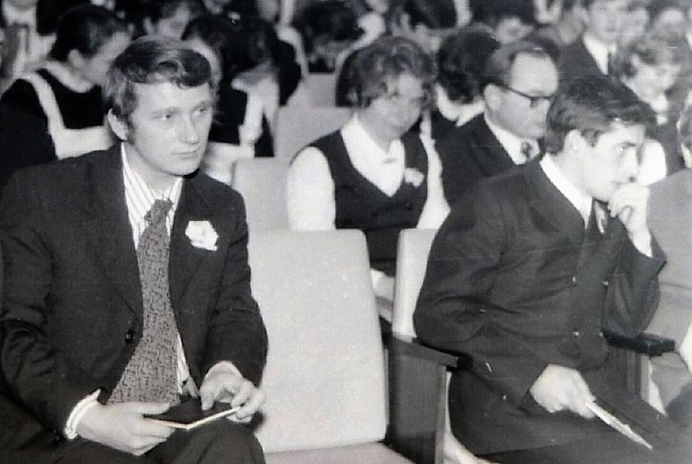
1973 год, Евгений Абакулкин на комсомолькой конференции завода ОЧКС , вскоре на семинаре во Владимире встретил свою будущую жену с Украины и уехал с ней работать в тогдашний Днепродзержинск (ныне Каменское). В семье двое сыновей, внуки. Карьеру завершил на Днепровском металлургическом комбинате профсоюзным лидером. Ныне воспитывает внуков и выращивает виноград у себя на даче, фото из его альбома в Одноклассниках.
Всё бы хорошо, но неудачный развал СССР на днепровской даче порой тревожит ветерана...

Так выглядел в 2007 году главный цех стекольного завода в посёлке Первомайский Селивановского района Владимирской области, где автор этих строк в 1970 году начал и через 3 месяца завершил карьеру стекольщика на должности главного механика завода...
После срочной службы, не видя для себя перспектив в стекольном деле, остался в армии, закончил военную академию, дослужился до майора, баллотировался в Государственную Думу от демократов, преподавал компьютер чиновникам мэрии Москвы и ушёл на пенсию в 2011 году. К работе по найму не возвращался. В браке двое детей и двое внуков, пенсия около 30 тысяч, постоянно живу в Подмосковье, на скромную жизнь хватает, здоровье согласно возрасту. Продолжаю играть в шахматы...
Свою спортивную победу в эти дни над сильным противником в блиц посвящаю 50-летию со дня выпуска из ГСТ...
В последнее время занят ценностной системой глобального человека для современной цифровой цивилизации...
Надеюсь, эта схема поможет молодым людям идти в правильном направлении и конструктивно исправлять неизбежные мелкие ошибки..
Согласно моей системе, по моим наблюдениям, живёт не более 3% населения.
Оценка собственного счастья на 21.06.2020 снизилась с 55% до 53% из-за коронавируса и стагнации экономики: Безопасность - 35%; Деньги 35%; Любовь 50%.... и т.д. Определения ценностей представлены здесь
53% счастья позволяет мне сносно жить
Индекс счастья: Росси по версии ООН
Практическая реализация в цифровом виде общечеловеческих ценностей и её принятие хотя бы до 10% населения в настоящее время облегчит расчёт разумных инвестиций, адресную поддержку нуждающихся.
Уверен, что единая культура глобального человека и общества в 21 веке сформируется на достоинстве человека, общечеловеческих и понятных ценностях. Государственная экономика, владение основными материальными ценностями правящей верхушкой, подкуп активных лиц общества затрудняет развитие достоинства у населения, тормозит становление устойчивых сообществ и всего человечества.
Погоня за материальными ресурсами подходит к своему завершению. Пределы хаотического роста потребления на Земле обозначились и в случае продолжения предвещают только крах и многочисленные беды для большинства населения планеты.
Тем более, что русским предстоит стать сначала политической нацией и самое главное обрести гражданское сообщество ценностно-ориентированных людей, подняв долю человеческого капитала с 46% до уровня развитых стран в 70%. Другой социально-технологической возможности я не вижу.
В настоящее время в Беларуси разворачивается мирная демократическая революция. Будем надеяться, что их шаг в направлении цивилизации принесёт им ожидаемую пользу.
—
Исторический снимок - в ночь на 1 июля 2020 года, ровно через 50 лет после выдачи дипломов ГСТ в России приняли обновлённую Конституцию и сгорел главный избирательный пункт - Клуб им. Ленина.
С этим местом связаны многие воспоминания выпускников ГСТ.
Мне жаль эту материальную ценность, но не общественные и производственные отношения основанные на диктатуре пролетариата и общей собственности.
В Гусь-Хрустальном, в его стекольном колледже начинается новая эпоха . Пожелаем городу и миру эффективно войти в современную цивилизацию глобальных ценностей и достоинства человека.
----------------------------------------------------------------------------.
Примечание:
Наш выпуск 1970 года (4 года обучения) - 100 человек.
В Одноклассниках и других социальных сетях нашей информационной эпохи отметилось 15 человек; публикуют свои фото и тексты не более 3 человек, остальные - только фото и наращивают друзей для обмена картинками и репликами к ним.
Приглашение на совместное творчество по случаю 50-летия, хотя бы в форме простого упоминания имени и двух абзацев о карьере, не сложилось; одноклассники, как и большинство людей, заняты материальными ресурсами и выживанием в среде коронавируса; о себе публикаций и до этого было крайне мало, что затрудняет понимание новейшей истории в лицах, культуры общежития. И это мирные годы. Что уж говорить о солдатах ХХ века? Там миллионы неизвестных судеб. Гражданская война на территориях Российской империи закончилась победой большевиков, но не гражданским миром для устойчивого развития и счастливой жизни.
Возвращается на Русь и христианство в качестве культурного наследия нашего народа.
Основная часть работы над страницей завершена на Успе́ние Пресвято́й Богоро́дицы.
Однако я продолжу размещать информационные материалы для этой исторической страницы.
Спасибо всем моим соавторам, пишите, звоните, предлагайте и критикуйте...
--------------------------------------------------------------.
Фильм 2016 года (группа автоматиков) .
Фильм 2017 года
Фильм 2018 года (группа технологов) .
Фильм ГУСЬ-ХРУСТАЛЬНЫЙ 27.07.2020 года .
Почтовый ящик для писем Одноклассников- b-i@list.ru .
Фильм о продолжении моего образования.
04.11.2020
Эпилог
Прошло 5 лет и стало очевидно, что наша юность по Кольцову цвела под туманом густым.
Юрй Коробов, Владимир Ломтев, Борис Майоров, Владимир Полосин
Нас учили строить коммунистический мир и радоваться победам большевиков
на фронтах гражданской войны. Да и сегодня общественные запросы не
далеко ушли.
Моя политическая история части 1 и 2 | Борис Майоров | Дзен (dzen.ru).
Моя политическая история, часть 3 | Борис Майоров | Дзен (dzen.ru).
Из группы механиков за 5 лет ни кто не откликнулся.
На мои звонки теперь не отвечают и Ломтев, и Коробов, и Полосин, ушедшие в мир иной.
И если у человечества есть БУДУЩЕЕ, то оно связана с ДОСТОИНСТВОМ ЧЕЛОВЕКА
© Борис Майоров, 2020-2025